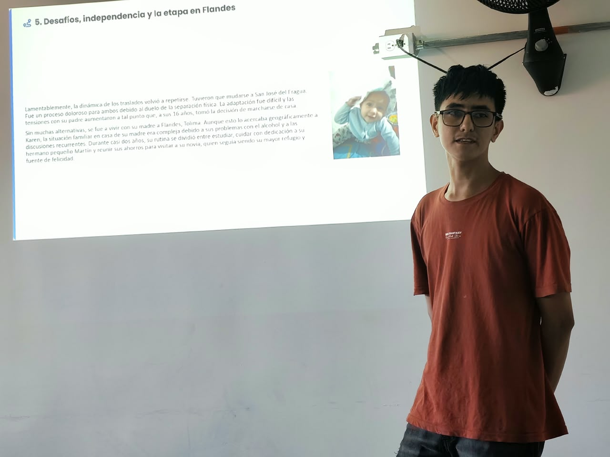

Exposiciones y evidencias
Introduccion
En este portafoliose reunen los trabajos, talleres y actividades desarrolladas durante el semestre en el area de Comunicacion. Cada ejercicio muestra parte de lo que estudiamos y practicamos en clase. El proposito es dejar organizadas las evidencias del proceso y recordar los conocimientos que fuimos adquiriendo a lo largo del semestre.

Primera clase
Al comenzar el semestre revisamos el acuerdo pedagógico y las pautas para trabajar en clase, como llegar a tiempo, prestar atención, evitar el celular y respetar los descansos. También hicimos un juego en círculo en el que debíamos decir números en orden, actividad que ayudó a ejercitar la concentración, la rapidez mental y la agilidad.

Escaleta
La profesora propuso organizar una historia de vida mediante una escaleta. Debíamos incluir datos sobre nuestra vida, la de nuestros padres, cómo se conocieron y algunos acontecimientos importantes. Antes de hacer el ejercicio investigamos el significado de escaleta y después compartimos el trabajo con el grupo.
